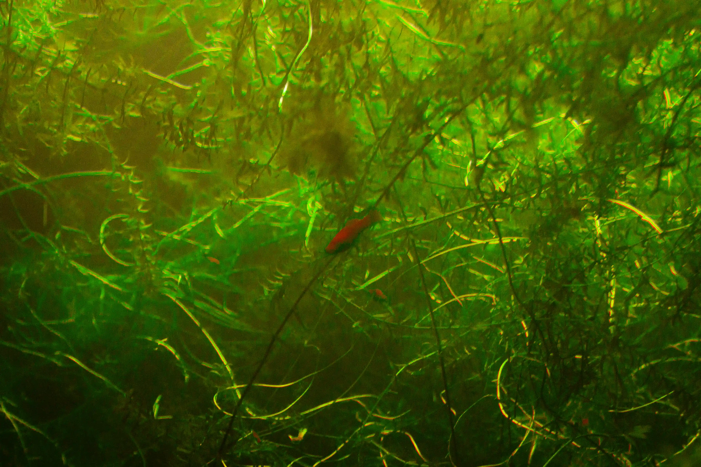
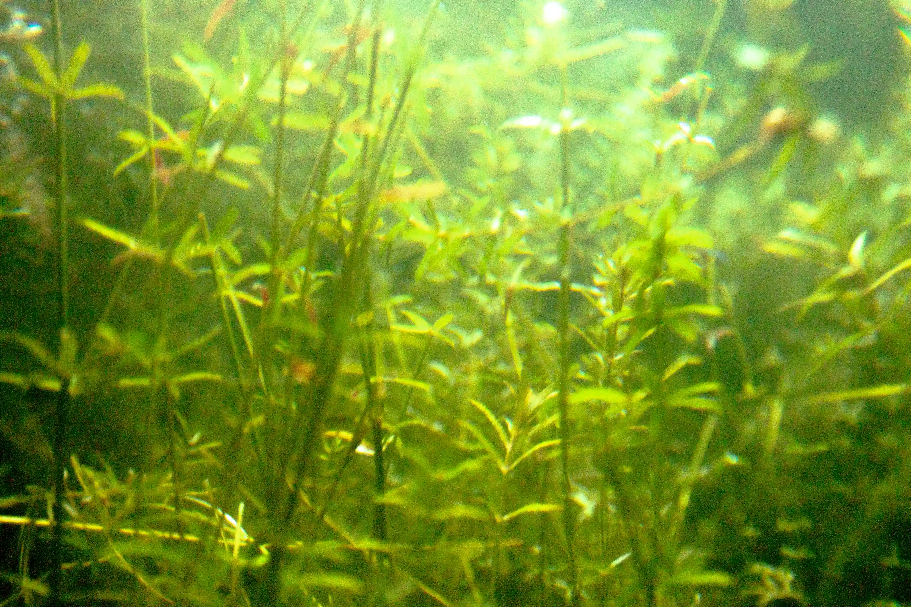
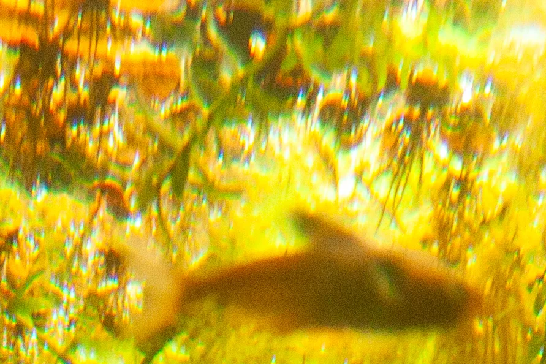
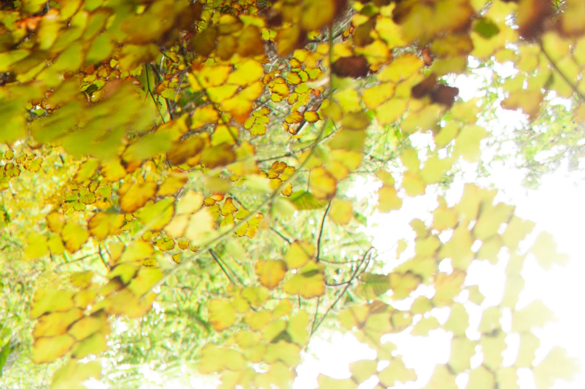
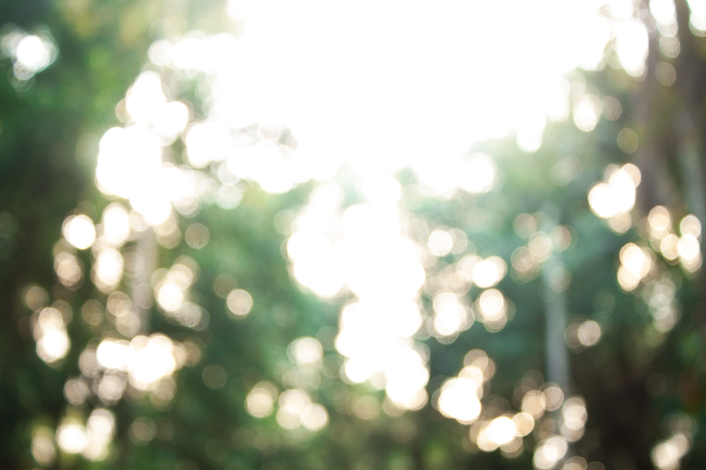

Fotografia e pós-produção: Giovanni Vieira ✶
Inspirado pelo trabalho “Cordas do Coração” de Kazuhiko Matsumura, o projeto propõe capturar o olhar de um peixe na natureza, explorando a intensidade e a dinâmica de sua vida em movimento. Assim como o fotógrafo busca expressar as vivências internas de pessoas com demência e seus relacionamentos, aqui a fotografia é utilizada para transmitir a sensibilidade e profundidade da vida animal.
Vida
ISO 800; f/4,5; 1/13s
Nenhum ser é solitário. O peixe é apenas uma peça do ecossistema que faz seu mundo funcionar, ele sempre está cercado por outros seres ao seu redor e quando percebemos isso, ele se une ao plano de fundo, tornando viável o que conhecemos como vida.

Bolha
ISO 400; f/3,5; 1/4s
Tudo parece tão confortável, tão familiar. A bolha é como se fosse um ambiente regulador. Mas será que é isso que o peixe quer?

Lucidez
ISO 800; f/5; 1/10s
Este é o momento em que as coisas começam a fazer sentido. É o momento em que o peixe sente euforia por perceber que sempre esteve nadando num mar de infinitas possibilidades.

Efermidade
ISO 100; f/5; 1/4s
É quando o sentimento de querer o mundo nas suas barbatanas é rapidamente substituído pela conformação de que o peixe não vai conseguir nadar pelo muito inteiro. No entanto, ele não vê problema nisso, afinal, nenhum animal consegue realizar todos os seus desejos em vida.

Deságua
ISO 100; f/5; 1/6s
O mundo lá em cima também parece ser interessante. De repente, a luz fica forte demais e o peixe fica desorientado. Ele não sabe o que vem pela frente, mas pela primeira vez, sente seu corpo desaguando num espaço sem água.
